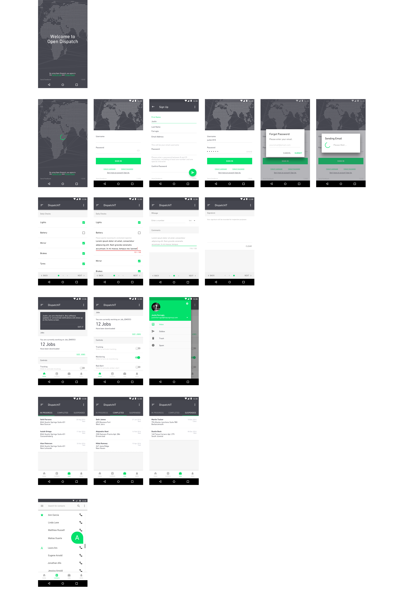
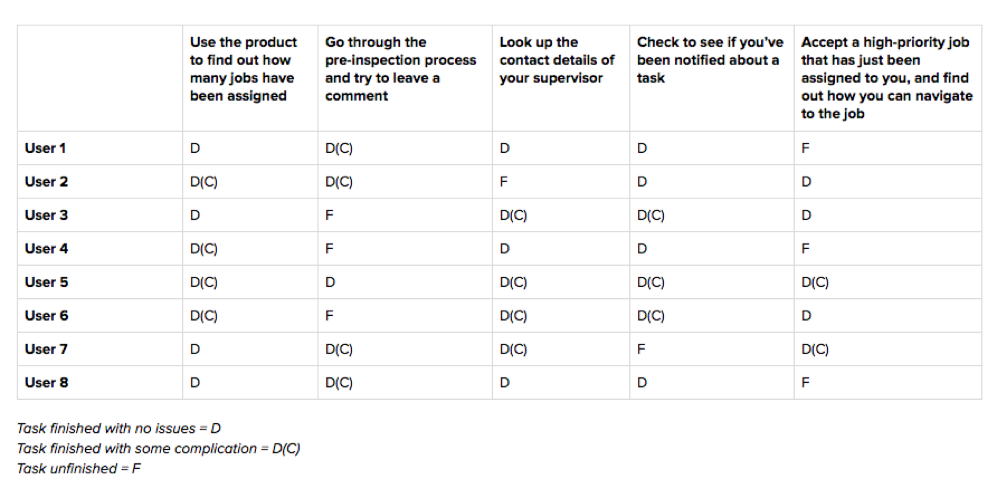
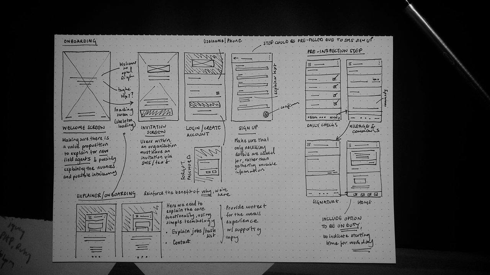
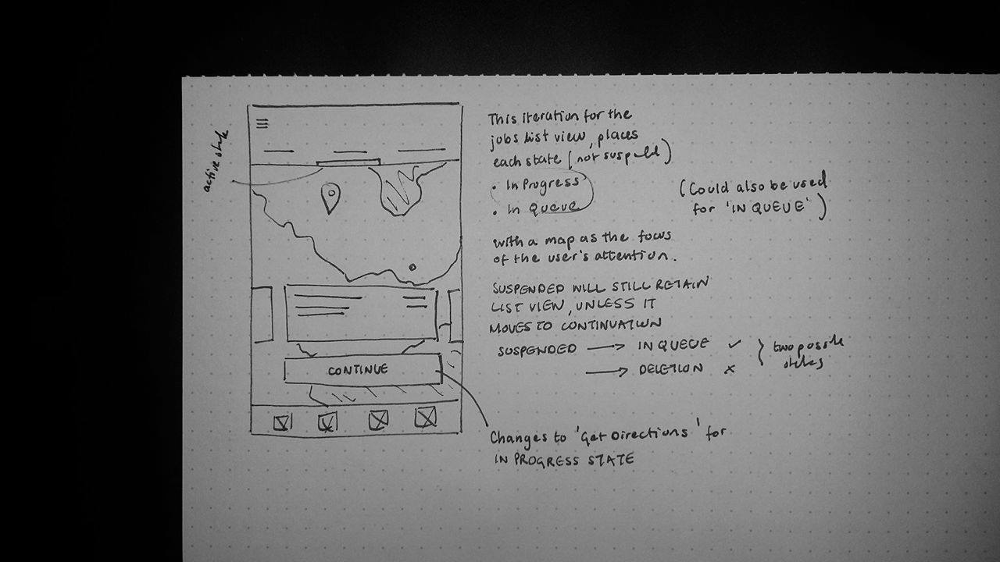
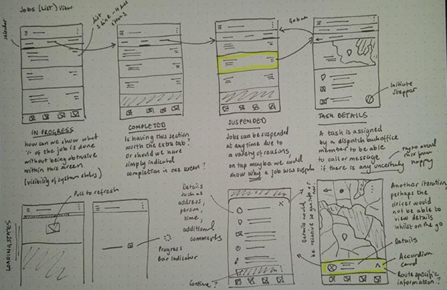
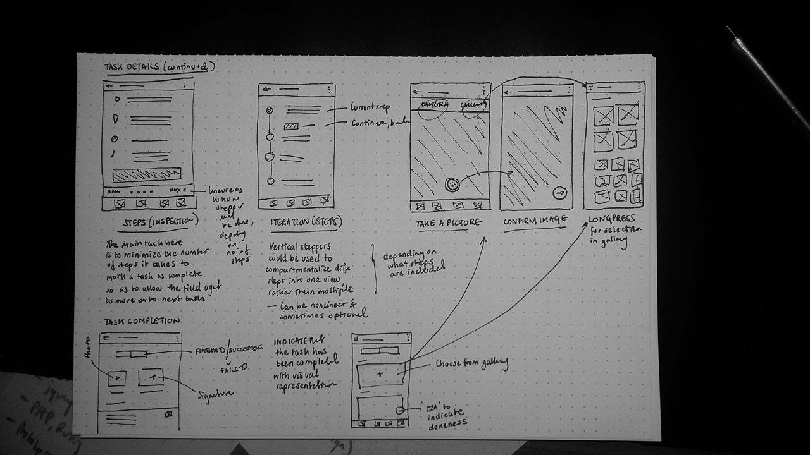
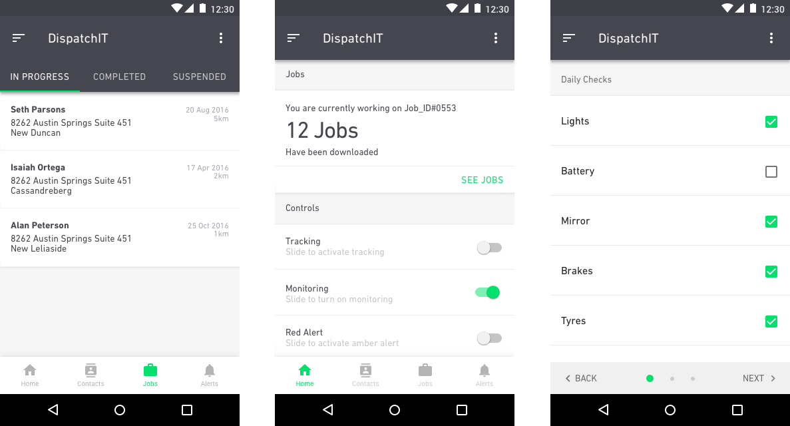

Building a fleet management solution
This project took place between July 2016 and October 2016. I was a user experience design intern making up a small team that consisted two senior engineers and an engineering intern. I was responsible for initial research, experience design, visual design and some front-end development.
Unfortunately, most of the work that will be shown here didn’t get shipped due to reasons that I can’t publicly disclose. What I can tell you however, is that this was one product that definitely needed some love.
Overview
Open Dispatch is a fleet management application designed to provide mobile teams such as technicians and drivers an intuitive and unobstructive experience with which to carry out their work. Fleet managers, back office managers and workshop operators are also able to view real-time updates of the progress made by field agents.

An eagle's eye view of just a few of the final iterations that we had tested with a number of people. From Top to Bottom: Splashscreen, Sign-Up flow, Pre-Inspection Steps, Home, Jobs, Contacts
How can we make mobile workers’ communication channels with the backoffice more clear?
This was the problem. Productivity is critical for a mobile workforce to operate at an optimal level. If the backoffice team and the field agents were not communicating well, then that in itself would be a major headache for the business.
Thus, the more connected a workforce is to the business, the more productive they become. This problem is important to solve because if a workforce is not productive, then not only may there be considerable revenue decrease from the business end, but business customers might also opt to switch supplier.
Approach
My lack of domain knowledge in this particular space meant that I needed to dive in, and immerse myself as thoroughly and as quickly as possible. Due to a very limited timeline, I had to resort to good old desk research. That basically translates to having twenty browser tabs open, research articles, blogs a plenty and whatever else I could get my hands on to inform both myself and the product decisions I would eventually make.
 <p class="description">We tried to find out current pain points within the existing solution, so that we could see what was and wasn’t working. As can be seen above there were definitely some problems that we needed to address. </p>
Getting to know our users
We also made it a point to talk to people before we committed to building anything. I began the process by interviewing six participants to get an idea of how people use exisiting manifestations of fleet management software. Directly talking to people helped me understand the pain points they had, gather context as well as analyze some of their workflows.
Through talking to people, I came to realize a few things:
- Members of the backoffice had different ways of how they would handle certain tasks with certain field workers, and as such there was no real consistency in procedure
- Sometimes tasks were too ill-informed to be fully completed. This was true for both sides of the coin, as field workers sometimes didn’t have enough information or might have missed a step when marking a job as completed.
- This led to backoffice staff misperceiving task completion and having to make calls which made them less productive or responsive to procedure/emergency related calls.
I believed that the collective mind is better than the singular mind when it comes to collecting, understanding and then synthesizing research. Sharing every last scrap of information we could find with each other, was essential, as it kind of helped us prepare mentally for the ideation process.
Setting the Design Direction
   
Solution
We chose to leverage Google’s Material Design language because as a team we felt that it gives us the comprehensiveness and flexibility we needed, to be able to communicate depth and motion when necessary throughout the different elements and interactions we incorporated into the product.

From left to right: The jobs in progress list, the home feed, and the pre-inspection step which happens before users navigate the core functionalities of the app itself
Takeaways
Unfortunately our work never saw the light of day (unless you count the people we had asked to come in for testing). As a result of this I’ve learnt that industries such as this come with a different host of topics, areas and issues that will need to be considered when architecting a solution.
It was strange. Being exposed to failure this early on in my career was something that I never expected after graduation. Pushing the value of design in an area with a lot of friction, whilst mostly being exposed to people designing in the consumer space who were getting much less resistance, was another challenge. But hey, what’s building something without roadblocks?